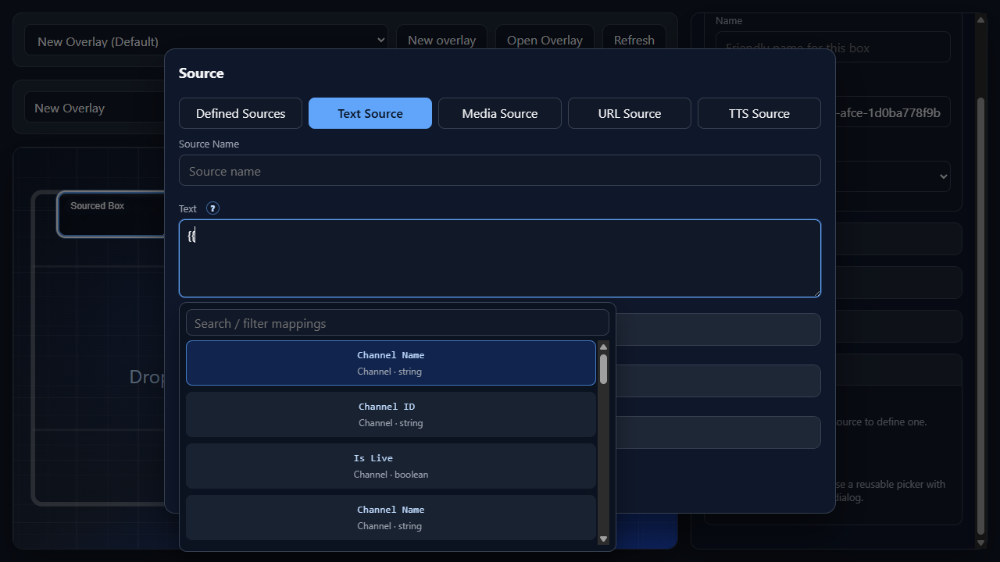
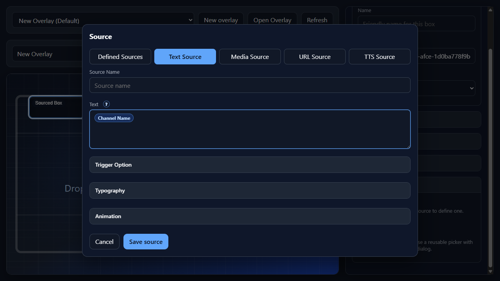

Inside Component
Argument Control
Argument Control is the {{ autocomplete used in source text, media trigger mappings, TTS messages, and other trigger-aware fields.
Auto-Complete

Type {{ in a supported field to open the Auto-Complete control. The list filters while the user types, and the selected token inserts without forcing the user to leave the keyboard.
Use this whenever a field needs live trigger data instead of fixed text, such as chat names, message text, command arguments, dynamic media URLs, or custom trigger payload values.
Auto-completed

After a suggestion is selected, NekoBot shows the token as a compact chip so completed fields are easier to scan.
The saved value remains a template token such as {{channel.channelName}}, {{user.display}}, or {{command.arguments[0]}}, so the trigger system still receives the exact runtime value it needs.
Add Trigger Control
Triggers is the search control used in Add Trigger. It is populated from the Streamer.bot trigger catalog, then displays each available trigger as a selectable row.
Raw TriggerRaw Trigger, and the description Subscribed raw Streamer.bot event.Command TriggerCommand Trigger, and description parts from command aliases, trigger modes, and disabled state.Action TriggerAction Trigger, and description parts from action group, trigger events, and disabled state.Trigger Tokens
The {{ Auto-Complete list is populated by /api/triggers/mapping. It is one flat list sorted by token key, filtered by what the user types after {{, then by the search field.
User{{user.id}}, {{user.name}}, {{user.display}}, {{user.login}}, {{user.role}}, {{user.roleName}}, {{user.avatar}}, {{user.color}}, {{user.badges}}, {{user.subscribed}}, {{user.subscriptionTier}}, {{user.monthsSubscribed}}, {{user.verified}}, plus aliases {{user.username}}, {{user.isSubscribed}}, {{user.isVerified}}, {{user.profilePicture}}, {{user.displayName}}, and {{userName}}.Message{{message.id}}, {{message.text}}, {{message.emotes}}, {{message.parts}}, {{message.meta}}, plus alias {{text}}.Channel{{channel.id}}, {{channel.name}}, {{channel.channelName}}, {{channel.platform}}, {{channel.isLive}}.Trigger{{trigger.id}}, {{trigger.type}}, {{trigger.eventType}}, {{trigger.source}}, {{trigger.timestamp}}, {{trigger.name}}, {{trigger.isFirstWords}}, plus alias {{isFirstWords}}.Context{{context.sessionId}}, {{context.requestId}}, {{context.correlationId}}, {{context.tags}}, {{context.metadata}}.Platform{{platforms.streamerbot}}, {{platforms.twitch}}, {{platforms.kick}}, {{platforms.youtube}}, {{platforms.custom}}.Argument Values
These are the currently populated mappings that behave like command or payload arguments inside the same {{ Auto-Complete list.
Command arguments{{command.name}}, {{command.prefix}}, {{command.fullCommand}}, {{command.arguments}}, {{command.arguments[0]}}, {{command.argumentCount}}, {{command.argsText}}, {{command.counter}}, {{command.userCounter}}, plus alias {{firstArg}}.Message text{{message.text}} and alias {{text}}. Use these for chat-driven text, TTS content, captions, and callouts.Custom payload{{custom}} and {{custom["key"]}}. Replace key with the custom variable name supplied by the trigger payload.Selection Behavior
Type {{Keep typingArrow keysEnter or TabEscapeExamples
{{user.display}}: {{message.text}}{{command.argsText}}{{custom["favoriteColor"]}}{{user.display}} used {{command.name}} with {{command.argumentCount}} arguments